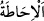
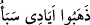

Bilirim ki bunu yaparsın. Çünkü affetmek peygamber ve cömert kimselerin işidir.”
Süleyman (a.s.) hüdhüdü affetti ve sonra ona nerede olduğunu sordu.
Hüdhüd “şöyle dedi: “Ben, senin bilmediğin bir şeyi öğrendim.”
“__WORD__ bir şeyi bütün yönüyle bilmek demektir.
Yâni ben senin her yönden bilip tanımadığın bir şeyi bütün yönleriyle öğrenip
belledim, dedi. Çünkü bu durum Süleyman (a.s.)’ın görmediği, cinlerden ve insanlardan
duymadığı hususlardandı.
Burada Mürsel bir peygamberin bilmediği bir ilmi bir kuşa tahsis eden Allah
Teâlâ’nın kerem ve rahmetinin genişliğine işâret etmektedir. Ancak peygamberlik
konusunda faydası olmayan bir ilmi bilmemek, nebî ve rasûlün peygamberliğine bir
noksanlık getirmez. Nitekim Rasûlullah (s.a.), faydası olmayan ilimden Allah’a
sığınarak: “Faydasız ilimden sana sığınırım.”[56] derdi.
Hâsılı hüdhüdün her yönden bilip öğrendiği şey, bilinmesi bir üstünlük, bilinmemesi
de noksanlık sayılmayan duyularla bilinen husulardandı. Çünkü onun idrâki ancak
akıllıların ve diğerlerinin kendisinde eşit olduğu mücerred hissetmeye dayanıyordu.
el-Es’iletü’l-müfhıme’de der ki: “Bu karşılıklı konuşmada bir sû-i edebdir. O,
Süleyman (a.s.) gibi birisine nasıl söyledi ve o buna tahammül etti?” sorusunun cevabı
şöyledir: O, bu hitabın peşinden faydalı bir bilgi getirmiştir. Büyüklerin bir faydaya
eşlik eden sertliğe tahammül ettikleri olur.”
Sonra hüdhüd onunla ilgili önemli bir hizmetle meşgul olduğuna işâretle şöyle dedi:
Ben senin yanına “Meârib” denilen Sebe şehrinden geldim. “Sebe’den sana çok doğru”
önemli, kesin ve kendisinde şüphe olmayan “bir haber getirdim.”
Burada haber veren kimsenin ancak kesin olarak bildiği bir şeyi haber vermesi
gerektiğine işâret edilmektedir. Özellikle de hükümdarların yanında.
Sebe’, Yemen’de bir bölgenin adıdır. Orada yaşayanlar, en büyük dedelerinin ismi ile
isimlendirilmişlerdir. O ise Sebe’ b. Yeşcüb b. Ya’rub b. Kahtan’dır. O’nun isminin
Abdüşşems olduğu, ilk defa esir alan o olduğu için ona “Sebe” lakabının verildiği de
söylenmiştir. Daha sonra Me’rib şehri “Sebe” diye isimlendirilmiştir. Burası ile San’â
arası üç günlük yoldur. Yine Sebe’nin Yemen meliklerinin ilk taç giyeni olduğu
söylenmiştir. Onun on oğlu vardı. Altısı Yemen’e, dördü Şam’a yerleşti. Şam’da
yerleşenler Lahm, Cüzâm, Âmile, ve Gassân; Yemen’de yerleşenler ise Kinde, Eş’ar,
Ezd, Muzhic, Enmâr ve Humeyr idi.
Hz. Peygamber (s.a.)’e: “Ya Rasûlallah! Enmâr da nedir?” diye sordular. “Has’am ve
Büceyle’nin babasıdır.” buyurdu.
el-Müfredât’ta der ki: “Sebe’ halkının darmadağın olduğu bir beldenin ismidir. Onun
için “__WORD__ denir. Yâni Sebe halkının her yöne dağıldığı gibi darmadağın oldular
demektir.”
Bazıları demiştir ki: “Yakınında olduğu halde Süleyman (a.s.)’a Belkıs’ın haberinin
gizli kalması, Süleyman (a.s.)’ın San’â’da konaklaması, Belkıs’ın ise Me’rib’de olması